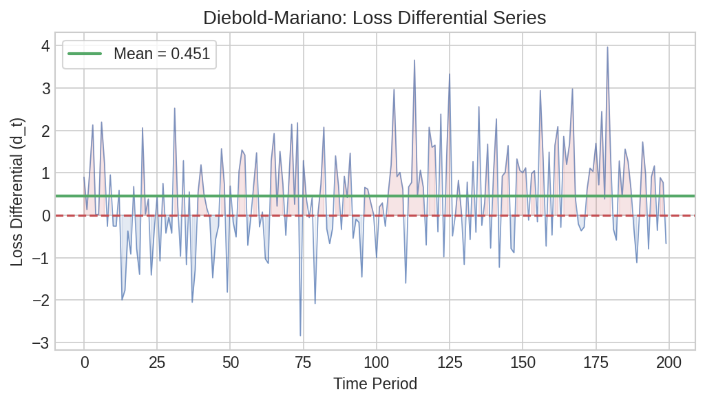
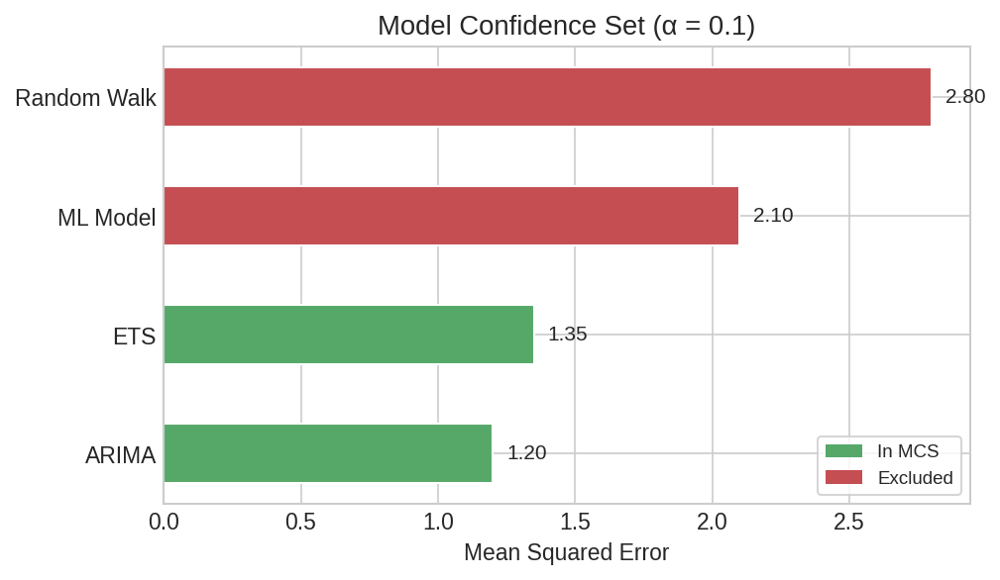

Forecast Model Comparison¶
When multiple forecasting models compete for the same prediction task, you need formal statistical tests to decide which one is best — or whether several are statistically indistinguishable. This page walks through pairwise, nested, and multiple-model comparison tests using simulated retail sales forecast errors.
Setup¶
import polars as pl
import polars_statistics as ps
import numpy as np
rng = np.random.default_rng(42)
n = 200
# Simulated forecast errors from 4 models
df = pl.DataFrame({
"e_random_walk": rng.normal(0, 5.0, n).tolist(),
"e_arima": rng.normal(0, 3.5, n).tolist(),
"e_ets": rng.normal(0, 3.8, n).tolist(),
"e_ml": rng.normal(0, 2.8, n).tolist(),
})
# Squared losses for SPA/MCS tests
df_loss = df.with_columns([
(pl.col("e_random_walk") ** 2).alias("l_rw"),
(pl.col("e_arima") ** 2).alias("l_arima"),
(pl.col("e_ets") ** 2).alias("l_ets"),
(pl.col("e_ml") ** 2).alias("l_ml"),
])
Pairwise Accuracy — Diebold-Mariano¶
The Diebold-Mariano test compares the predictive accuracy of two forecasts. A significant negative statistic means model 1 has smaller loss.
# ARIMA vs Random Walk
dm1 = df.select(
ps.diebold_mariano("e_arima", "e_random_walk").alias("dm")
)
dm1_r = dm1["dm"][0]
print(f"ARIMA vs RW: DM={dm1_r['statistic']:.3f}, p={dm1_r['p_value']:.3f}")
# ARIMA vs ML
dm2 = df.select(
ps.diebold_mariano("e_arima", "e_ml").alias("dm")
)
dm2_r = dm2["dm"][0]
print(f"ARIMA vs ML: DM={dm2_r['statistic']:.3f}, p={dm2_r['p_value']:.3f}")
Expected output:
ARIMA significantly outperforms the random walk (negative DM, p=0.004), but the ML model significantly outperforms ARIMA (positive DM, p=0.001).

Plot code
import matplotlib.pyplot as plt
loss_diff = (df["e_arima"].to_numpy()**2 - df["e_random_walk"].to_numpy()**2)
fig, ax = plt.subplots(figsize=(10, 3.5))
ax.bar(range(len(loss_diff)), loss_diff, color="#4C72B0", alpha=0.7, width=1.0)
ax.axhline(0, color="#C44E52", ls="--", lw=1.5)
ax.axhline(loss_diff.mean(), color="#55A868", ls="-", lw=2,
label=f"Mean diff = {loss_diff.mean():.2f}")
ax.set_xlabel("Observation")
ax.set_ylabel("Loss Differential (ARIMA² − RW²)")
ax.set_title("Diebold-Mariano: ARIMA vs Random Walk")
ax.legend()
plt.tight_layout()
plt.savefig("fcast_loss_differential.png", dpi=150)
Permutation Testing¶
A distribution-free comparison of the two forecast error series:
result = df.select(
ps.permutation_t_test(
"e_arima", "e_random_walk",
n_permutations=999, seed=42,
).alias("perm")
)
perm = result["perm"][0]
print(f"Permutation t: statistic={perm['statistic']:.3f}, p={perm['p_value']:.3f}")
Expected output:
The permutation test on raw errors (not squared losses) is not significant — both error series have mean near zero. This is expected: the DM test compares loss magnitudes, not raw error means.
Nested Model Comparison — Clark-West¶
When one model nests another (e.g., random walk is nested within ARIMA), the Clark-West test adjusts for the bias in MSPE comparison:
result = df.select(
ps.clark_west("e_random_walk", "e_arima").alias("cw")
)
cw = result["cw"][0]
print(f"Clark-West: statistic={cw['statistic']:.3f}, p={cw['p_value']:.1f}")
Expected output:
Strong evidence that ARIMA improves over the random walk — the adjustment accounts for the fact that the restricted model is a special case of the larger model.
Multiple Model Comparison¶
Superior Predictive Ability (SPA)¶
The SPA test asks: does any model significantly outperform the benchmark?
result = df_loss.select(
ps.spa_test(
"l_rw", "l_arima", "l_ets", "l_ml",
n_bootstrap=999, seed=42,
).alias("spa")
)
spa = result["spa"][0]
print(f"SPA statistic: {spa['statistic']:.2f}")
print(f"p (consistent): {spa['p_value_consistent']:.3f}")
print(f"Best model index: {spa['best_model_idx']}")
Expected output:
Model Confidence Set (MCS)¶
The MCS identifies the subset of models that contains the best with a given confidence level:
result = df_loss.select(
ps.model_confidence_set(
"l_rw", "l_arima", "l_ets", "l_ml",
alpha=0.1, n_bootstrap=999, seed=42,
).alias("mcs")
)
mcs = result["mcs"][0]
print(f"Included models: {mcs['included_models']}")
print(f"MCS p-value: {mcs['mcs_p_value']:.3f}")
Expected output:
Only model index 3 (ML) survives — it is the sole member of the 90% model confidence set. All other models are eliminated as significantly inferior.
MSPE-Adjusted SPA¶
A variant that adjusts for MSPE bias in nested model comparisons:
result = df_loss.select(
ps.mspe_adjusted(
"l_rw", "l_arima", "l_ets", "l_ml",
n_bootstrap=999, seed=42,
).alias("mspe")
)
mspe = result["mspe"][0]
print(f"MSPE statistic: {mspe['statistic']:.2f}")
print(f"p (consistent): {mspe['p_value_consistent']:.3f}")
print(f"Best model index: {mspe['best_model_idx']}")
Expected output:

Plot code
import matplotlib.pyplot as plt
import numpy as np
models = ["Random Walk", "ARIMA", "ETS", "ML"]
mean_loss = [
df_loss["l_rw"].mean(),
df_loss["l_arima"].mean(),
df_loss["l_ets"].mean(),
df_loss["l_ml"].mean(),
]
in_mcs = [False, False, False, True]
colors = ["#55A868" if m else "#C44E52" for m in in_mcs]
fig, ax = plt.subplots(figsize=(7, 4))
bars = ax.bar(models, mean_loss, color=colors, alpha=0.8, edgecolor="white")
for bar, m in zip(bars, in_mcs):
if m:
bar.set_edgecolor("#333")
bar.set_linewidth(2)
ax.set_ylabel("Mean Squared Loss")
ax.set_title("Model Confidence Set (α = 0.1)")
# Add legend
from matplotlib.patches import Patch
legend_elements = [
Patch(facecolor="#55A868", label="In MCS"),
Patch(facecolor="#C44E52", label="Eliminated"),
]
ax.legend(handles=legend_elements)
plt.tight_layout()
plt.savefig("fcast_mcs_bars.png", dpi=150)
Distribution Comparison¶
Beyond accuracy, you may want to know whether two models produce error distributions of the same shape. The energy distance and MMD tests address this:
tests = df.select(
ps.energy_distance(
"e_arima", "e_ml",
n_permutations=999, seed=42,
).alias("energy"),
ps.mmd_test(
"e_arima", "e_ml",
n_permutations=999, seed=42,
).alias("mmd"),
)
ed = tests["energy"][0]
print(f"Energy distance: statistic={ed['statistic']:.3f}, p={ed['p_value']:.3f}")
mmd = tests["mmd"][0]
print(f"MMD test: statistic={mmd['statistic']:.3f}, p={mmd['p_value']:.2f}")
Expected output:
Neither test rejects the null hypothesis that the two error distributions are identical. Both models produce normally distributed errors centered at zero — the difference lies only in their spread (variance), which these tests are less sensitive to compared to the loss-based tests above.